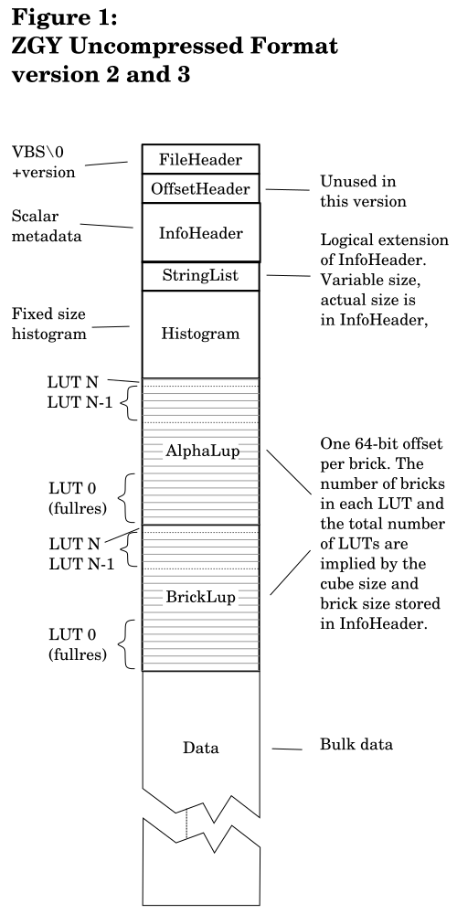

This is version 0.7 of the document, last updated 2021-04-15.
Copyright 2017-2021, Schlumberger
Licensed under the Apache License, Version 2.0 (the "License");
you may not use this file except in compliance with the License.
You may obtain a copy of the License at
http://www.apache.org/licenses/LICENSE-2.0
Unless required by applicable law or agreed to in writing, software
distributed under the License is distributed on an "AS IS" BASIS,
WITHOUT WARRANTIES OR CONDITIONS OF ANY KIND, either express or implied.
See the License for the specific language governing permissions and
limitations under the License.
There exists a closed source library able to read and write uncompressed ZGY and read compressed ZGY. This is freely available in binary form. It is delivered as a zip or tar archive containing API documentation, binary libraries, and headers. No source is provided except for a few examples on how to use the API.
Work is in progress on an open source library called OpenZGY that will be able to read and write the same ZGY format that the closed source library does. At least the uncompressed ZGY is planned to be fully supported. Although our legal department probably won't allow us to promise anything more than what you see is what you get.
No decision has been made whether to open source the existing compressed format.
OpenZGY extends the existing "uncompressed" format to optionally apply ZFP compression to some or all individual bricks. Without compressing the file itself. This is why the existing compressed format is being deprecated and might well be left as closed source.
The reference implementation of an OpenZGY reader will be written in Python. Focus will be on writing code that can explain any subtle issues that are not clear enough in the documentation. A C++ version might be implemented later.
Starting fresh is done for a number of reasons. The closed source code is old and has accrued quite a bit of technical debt, obscure apis, and unused features.
Initial tests of the pure Python accessor show that performance is comparable between the native C++ library, the Python wrapper around native C++, and the new pure Python implementation.
Note that it was a single simple test so this is a very rough comparison. The testing case was a single threaded read from a local file which is all the pure Python version can do for the moment. The test was run on a fairly old machine using a 20 GB file of float32 samples. The machine had 12 GB of ram. Each test was run multiple times so large parts of the file would have been in memory.
To test the raw bandwidth of the machine, "dd" was used to copy the zgy file to /dev/null with a 1 MB block size. For the ZGY library, all the full resolution samples were read, requesting 64x64x896 samples (14 MB) at a time and the result was discarded. At the lowest level this still ends up reading 1 MB blocks.
| Raw "dd" | 110 MB/s | Native C++ | 102 MB/s | Python wrapper | 101 MB/s | Pure Python | 101 MB/s |
This file contains the documentation of the uncompressed ZGY format. This applies both to the old ZGY library and OpenZGY.
The disk space needed for a ZGY file depends on the survey size and the percentage of bricks with no data in them. For compressed files it also depends on the requested output quality and on how much high frequency information exists in the input data. So your mileage may vary.
As a rough estimation for typical seismic data you can use:
| File type | Size on disk |
|---|---|
| Uncompressed float | size in samples * 4 * 1.3 |
| Uncompressed int16 | size in samples * 2 * 1.3 |
| Uncompressed int8 | size in samples * 1 * 1.3 |
| Compressed 50 dB | size in samples * 1 * 1.3 |
| Compressed 30 dB | size in samples * 0.6 * 1.3 |
The table assumes there are no dead traces.
The factor 1.3 accounts for the low resolution bricks (1/8 + 1/16 + ...) and for other overhead such as lookup tables and for rounding to a multiple of the brick size.
The table shows that compressing a float file by converting it to int8 will typically end up with the same size on disk as a ZFP compression with 50 dB signal to noise. However, the signal to noise ratio of the int8 file would be significantly worse.
The following describes the format of the physical file.
A ZGY file contains seismic samples for a fixed size 3d cube, and meta information such as the cube annotation and location. Samples are stored in bricks of 64*64*64 samples of int8, int16, or float32 data. So, the size of each brick is either 256 KB, 512 KB, or 1 MB depending on the data type. The enum for data type also includes int32, uint8, uint16, uint32, and ibm_float. Support for those types is limited and they may not work or may not be accessible from the api.
The ZGY file also has room for storing a boolean for each vertical trace telling whether this trace has live data or not. This feature is deprecated and should not be used. As long as these booleans (called alpha tiles) are not written out, the space penalty in the ZGY file is negligible.
ZGY automatically stores decimated versions of the data to speed up access. Level of Detail 0 (LOD 0) is the full resolution. The bricks always contain the same number of samples. This means that each low resolution brick is computed from several higher resolution (lower LOD number) bricks.
The uncompressed format version 2 and onwards store data inside each brick in format ZeroOneTwo, with the vertical (last) dimension varying fastest and the inline (first) dimension varying slowest. Uncompressed format version 1 stores sub-bricks of 8*8*8 samples inside each regular brick, both ordered TwoOneZero i.e. the other way around. Compressed data and the order of entries in lookup tables also use TwoOneZero: the vertical (last) dimension varying slowest and the inline (first) dimension varying fastest.
Some of the meta information is important because it must be known before the size and offset of several other sections can be known. Any code that wants to read ZGY files must implement a function that computes the number of tiles and bricks as described below.
Both the number of bricks and the number of LOD levels are calculated from the cube size. Enough levels of detail will be added to make the highest-level fit in a single brick. The number of bricks in LOD 0 is simply the survey size divided by the brick size and rounded up. The number of bricks in LOD n+1 is the number of bricks in LOD n divided by (2,2,2) and rounded up. The total number of bricks is found by summing the number of bricks in LOD 0, 1, 2, etc. up to and including the LOD that only contains a single brick.
The same calculation is used to calculate the number of alpha tiles, except that the number of LOD levels have already been determined by the bricks. And the vertical size is always 1 since the alpha tiles are 2d only. Readers of v2 and v3 need to be aware of how the deprecated alpha tiles (for flagging dead traces) are computed because this affects where the other headers are stored. For versions of ZGY that contain an offset table (v1, and presumably v4) this is not an issue.
The precise physical layout of the file depends on the version, but can be divided into:
Notes on gpiline, gpxline, gpx, gpy:
The grid definition in gpiline, gpxline, gpx, and gpy defines an affine transform from inline, crossline to world X, Y.
Since an affine transform is used it is possible to define a coordinate system where the X and Y axes are not precisely perpendicular to each other. It is up to the application reading the files to decide whether to accept such non-orthogonal coordinate systems. When writing files, think long and hard about whether to allow the user to create a non-orthogonal ZGY file. If you do, you might regret it after a few decades of supporting that feature in all your applications that read ZGY.
On write, gpiline and gpxline should contain the 4 corners of the survey in annotation values. This means they are to be trivially computed from orig, inc, and size. The order of the corners should be:
The gpx and gpy arrays should be set to the world (X,Y) coordinates corresponding to those 4 corner points.
On read, trust that the 3 first annotation points and the 3 first world coordinates refer to the same three locations and that those three points don't overlap and are not colinear. Do not trust that the points are in fact corners of the lattice. There is still enough information to reconstruct the lattice and calculate the actual corners, which the reader should do as soon as possible, so only the "correct" corner points are available in the API.
All integer data is stored as little-endian. Unlike format 1, only one level of bricking is used. The brick size is explicitly specified. But currently only bricks of 64*64*64 samples will work.
The uuids in a ZGY file on disk are stored not big-endian as RFC 4122 requires. Instead they are stored piecewise little endian. This affects how the raw bytes are converted to a canonical string. To avoid confusion an access library should prevent application code from seeing the raw bytes. Only the canonical string representation should be accessible. See doc/uuid.md for more details.
The physical layout of files version 2, 3, and 4 is identical. But version 4 allows interpreting the file slightly differently. Version 4 files may have entries in the lookup table starting with 0xC0. Had the old ZGY accessor been allowed to open such files (which it isn't, because the version is too high) then the compressed bricks would appear to be constant-value with an arbitrary constant. Similarly a version 4 file may be written without low resolution data meaning it will return nlods()==1. Had the old ZGY accessor been allowed to open such files it would return the wrong lod count. Leading the application to believe that low resolution data exists but then getting all zeros or possibly stale data back. The change from version 2 to 3 was done for similar reasons. Version 3 files were written by a completely redesigned library which was supposed to work identically but might have introduced subtle changes as with the 3 to 4 change. To my knowledge no such changes showed up.
| FileHeader | Located at the start of the file. | ||||||
|---|---|---|---|---|---|---|---|
| offset | size | type | name | remarks | |||
| 0 | 4 | uint8 | magic[4] | Always VBS\0 when viewed as a char[4]. | |||
| 4 | 4 | uint32 | version | Current version is 3. | |||
| 8 | end. | ||||||
| OffsetHeader | Consecutive, so this is offset 8 from the start of the file. | ||||||
| offset | size | type | name | remarks | |||
| 0 | 1 | uint8 | padding | Write as 0, ignore on read. | |||
| 1 | end. | ||||||
| InfoHeader | Consecutive, so this is offset 9 from the start of the file. | ||||||
| offset | size | type | name | remarks | |||
| 0 | 12 | int32 | bricksize[3] | Brick size. Values other than (64,64,64) will likely not work. | |||
| 12 | 1 | uint8 | datatype | Type of samples in each brick: int8 = 0, int16 = 2, float32 = 6. | |||
| 13 | 8 | float32 | codingrange[2] | If datatype is integral (note that int8 and int16 are the only integral types supported), this is the value range samples will be scaled to when read as float. In this case it must be specified on file creation. If datatype is float then this is the value range of the data and should be set automatically when writing the file. | |||
| 21 | 16 | uint8 | dataid[16] | GUID set on file creation. | |||
| 37 | 16 | uint8 | verid[16] | GUID set each time the file is changed. | |||
| 53 | 16 | uint8 | previd[16] | GUID before last change. | |||
| * | * | char* | srcname | Optional name of this data set. Rarely used. | |||
| * | * | char* | srcdesc | Optional description of this data set. Rarely used. | |||
| 69 | 1 | uint8 | srctype | Optional datatype the samples had before being stored in this file. | |||
| 70 | 12 | float32 | orig[3] | First inline, crossline, time/depth. Unline v1 these are now floating point. | |||
| 82 | 12 | float32 | inc[3] | Increment in inline, crossline, vertical directions. | |||
| 94 | 12 | int32 | size[3] | Size in inline, crossline, vertical directions. | |||
| 106 | 12 | int32 | curorig[3] | Unused. Set to (0,0,0) on write and ignore on read. | |||
| 118 | 12 | int32 | cursize[3] | Unused. Set to size on write and ignore on read. | |||
| 130 | 8 | int64 | scnt | Count of values used to compute statistics. | |||
| 138 | 8 | float64 | ssum | Sum of all "scnt" values. | |||
| 146 | 8 | float64 | sssq | Sum of squared "scnt" values. | |||
| 154 | 4 | float32 | smin | Statistical (computed) minimum value. | |||
| 158 | 4 | float32 | smax | Statistical (computed) maximum value. | |||
| 162 | 12 | float32 | srvorig[3] | Unused. Set equal to orig on write. Ignore on read. | |||
| 174 | 12 | float32 | srvsize[3] | Unused. Set to inc*size on write. Ignore on read. | |||
| 186 | 1 | uint8 | gdef | Grid definition type. Set to 3 (enum: "FourPoint") on write. Ignored on read. See notes for a longer explanation. | |||
| 187 | 16 | float64 | gazim[2] | Unused. | |||
| 203 | 16 | float64 | gbinsz[2] | Unused. | |||
| 219 | 16 | float32 | gpiline[4] | Inline component of 4 control points. | |||
| 235 | 16 | float32 | gpxline[4] | Crossline component of 4 control points. | |||
| 251 | 32 | float64 | gpx[4] | X coordinate of 4 control points. | |||
| 283 | 32 | float64 | gpy[4] | Y coordinate of 4 control points. | |||
| * | * | char* | hprjsys | Free form description of the projection coordinate system. Usually not parseable into a well known CRS. Petrel neither sets nor uses this field. Keep that in mind when reading files exported from Petrel. For files that will be imported into Petrel you will need another way to help the users load the data correctly. | |||
| 315 | 1 | uint8 | hdim | Horizontal dimension. Unknown = 0, Length = 1, ArcAngle = 2. Few applications support ArcAngle. Petrel neither sets nor uses the unit- and dimension fields. Both horizontal and vertical get left as Unknown, 1.0, and the empty string respectively. Technically this qualifies as a bug. | |||
| 316 | 8 | float64 | hunitfactor | Multiply by this factor to convert from storage units to SI units. Applies to gpx, gpy. | |||
| * | * | char* | hunitname | For annotation only. Use hunitfactor, not the name, to convert to or from SI. | |||
| 324 | 1 | uint8 | vdim | Vertical dimension. Unknown = 0, Depth = 1, SeismicTWT = 1, SeismicOWT = 3. | |||
| 325 | 8 | float64 | vunitfactor | Multiply by this factor to convert from storage unite to SI units. Applies to orig[2], inc[2]. | |||
| * | * | char* | vunitname | For annotation only. Use vunitfactor, not the name, to convert to or from SI. | |||
| 333 | 4 | uint32 | slbufsize | Size of the StringList section. | |||
| 337 | end. | ||||||
| StringList | Consecutive, so this is offset 346 from the start of the file. | ||||||
| offset | size | type | name | remarks | |||
| 0 | varies | char* | The 5 entries in the InfoHeader above that are variable length strings are stored here, to allow the InfoHeader to have a constant size. The strings are all null terminated and stored consecutively. The total size of the StringList section is stored in slbufsize. | ||||
| Histogram | Consecutive. Location in file depends on size of previous entries. | ||||||
| offset | size | type | name | remarks | |||
| 0 | 8 | int64 | cnt | Total number of samples. | |||
| 8 | 4 | float32 | min | Center point of first bin. | |||
| 12 | 4 | float32 | max | Center point of last bin. | |||
| 16 | 2048 | int64 | bin[256] | Histogram. | |||
| 2064 | end. | ||||||
| AlphaLup | Consecutive. Location in file depends on size of previous entries. | ||||||
| offset | size | type | name | remarks | |||
| 0 | varies | int64[] |
Offsets into the file for each alpha tile. The size of this section depends on "size" and "bricksize". "bricksize" is implicit (64,64,64) in version 1. This section should be written as all zeros and ignored on read. Had it been in use, entries would have the same meaning as in BrickLup except that bricksize[2]=1 and valuetype is uint8. With the default bricksize this means that alpha tiles are 4 KB each. | ||||
| BrickLup | Consecutive. Location in file depends on size of previous entries. | ||||||
| offset | size | type | name | remarks | |||
| 0 | varies | int64[] |
Offsets into the file for each data brick. The size of this section depends on "size". On write, all offsets should be a multiple of the brick size. On read, misaligned offsets should be tolerated but might result in significantly reduced performance. Version 1 files were usually written misaligned. Zero means brick does not exist, i.e. was never written. Reading such a brick should return the default value, which is the sample value that after conversion to float is the one closest to zero. Entries with the most significant bit set signify a brick where all samples have the same value. That value is stored in the least significant byte or bytes of the entry. The value type of the constant is the same as that of regular samples, and the constant is subject to the same conversion when the application requests float data. As with the missing bricks, these constant-value bricks do not take up space in the file apart from the 8-bit entry in the lookup table. An entry of 1 is treated the same as 0x8000000000000000, i.e. constant value zero before conversion to float. New files version 3 should write 0x8000000000000000 instead of 1, but both alternatives should be recognized on read. Any other entries are used as the file offset to the start of the brick. The size of the brick is given by bricksize * sizeof(valuetype). | ||||
Most numeric data is stored as little-endian, but 64 bit integers are stored as two 32-bit little-endian integers with the most significant half first. So, these are half big-endian, half little-endian. 64-bit integers are used in a couple of discrete properties and in all file offsets.
Two levels of bricking are used in version 1. The primary brick size is 64 in each direction. The data inside each brick is further subdivided into 8*8(*8) bricks.
| FileHeader | Located at the start of the file. | |||
|---|---|---|---|---|
| offset | size | type | name | remarks |
| 0 | 4 | uint8 | magic[4] | Always VBS\0 when viewed as a char[4]. |
| 4 | 4 | uint32 | version | In this case, 1. |
| 8 | end. | |||
| OffsetHeader | Consecutive, so this is offset 8 from the start of the file. | |||
| offset | size | type | name | remarks |
| 0 | 8 | int64 | infoheader_off | The offsets are stored as two little-endian 32-bit integers, with the most significant half first. |
| 8 | 8 | int64 | alphalup_off | |
| 16 | 8 | int64 | bricklup_off | |
| 24 | 8 | int64 | histogram_off | |
| 32 | end. | |||
| InfoHeader | Location in the file is specified in the OffsetHeader. | |||
| offset | size | type | name | remarks |
| 0 | 12 | int32 | size[3] | Integer size in inline, crossline, vertical directions. |
| 12 | 12 | int32 | orig[3] | First inline, crossline, time/depth. Only integral values allowed. |
| 24 | 12 | int32 | inc[3] | Integer increment in inline, crossline, vertical directions. |
| 36 | 12 | float32 | incfactor[3] | Unused. Write as (1,1,1), ignore on read. |
| 48 | 16 | int32 | gpiline[4] | Inline component of 4 control points. |
| 64 | 16 | int32 | gpxline[4] | Crossline component of 4 control points. |
| 80 | 32 | float64 | gpx[4] | X coordinate of 4 control points. |
| 112 | 32 | float64 | gpy[4] | Y coordinate of 4 control points. |
| 144 | 1 | uint8 | datatype | Type of samples in each brick: int8 = 0, int16 = 2, float32 = 6. |
| 145 | 1 | uint8 | coordtype | Coordinate type: unknown = 0, meters = 1, feet = 2, degrees*3600 = 3, degrees = 4, DMS = 5. |
| 146 | end. | |||
| Histogram | Location in the file is specified in the OffsetHeader. | |||
| offset | size | type | name | remarks |
| 0 | 4 | float32 | max | Center point of first bin. |
| 4 | 4 | float32 | min | Center point of last bin. |
| 8 | 1024 | uint32 | bin[256] | Histogram. |
| 1032 | end. | |||
| AlphaLup | Location in the file is specified in the OffsetHeader. | |||
| offset | size | type | name | remarks |
| 0 | varies | int64[] | As AlphaLup in version 2 and 3, except that entries are stored using a mix of big- and little-endian as described above. | |
| BrickLup | Location in the file is specified in the OffsetHeader. | |||
| offset | size | type | name | remarks |
| 0 | varies | int64[] | As BrickLup in version 2 and 3, except that entries are stored using a mix of big- and little-endian as described above. | |
The deprecated DMS format for coordtype is degrees, minutes, seconds encoded in a decimal format, so e.g. 3°12'59" becomes 31259. Add one second of arc to that number and you get 3°13'00" or 31300 (i.e. not consecutive numbers).
The Zgy library is responsible for generating the smaller, subsampled data at LOD>0. Spatially, each sample in LOD N maps to 2x2x2=8 samples of LOD N-1. The algorithms used for subsampling are non-trivial.
LOD level 1 generation discards 3 of the 4 vertical traces that form the input. In the vertical direction a low pass filter with length 10 is applied, before discarding every other sample of its result.
LOD level 2 and above used weighted averaging of all 8 source samples. Sample values that are common in the cube (as reported by the histogram) are presumably less interesting, so they receive less weight.
An unfortunate effect of these algorithms is that the LOD>1 bricks cannot be generated until all the LOD=0 bricks have been written, since the histogram of the entire file is needed to produce LOD=2 and above. This is not an issue if the LOD bricks are generated in a separate pass after all full resolution data has been written.
Application code is allowed to read from or write to the padding area between the survey edge and the rest of the brick. This is even encouraged because writing full bricks can be more efficient. It is unspecified whether the padding samples written in this manner are retained when the data is read back.
(Added 2020-12-15)
This is a long explanation of something that is a fairly obscure case.
For int8 and int16 files the data range should always have min < max. The reason is that applications will then have less corner cases to worry about. The rule is enforced when creating new files from OpenZGY. For float files the accessor should ignore the range. So it doesn't matter what it is set to in that case.
If an older file is encountered with min > max those values should be assumed to be garbage and ignored. not be possible. The unconverted integral storage values should be returned if the application tries to read back data as float. By default OpenZGY should hide the min and max values stored on the file and instead return a range consistent with having storage and float values being the same.
If an older file is encountered with min == max it is ambiguous what the application intended. There is at least one scenario where Petrel using the old ZGY accessor could write such files when all samples were the same.
This cube has all the samples set to the same value. Reading any sample as float returns that value. Reading raw storage values returns unspecified values but will probably return all zeros. The choice of storage values was made when the file was written. The old code in Petrel and ZGY could have, but doesn't, avoid the situation by widening the range to make it non-empty. TODO-Low: verify what ZgyPublic did.
This cube contains discrete values such as classification enums. Reading samples as float doesn't make sense and the result is unspecified but will probably return all zeros. Reading raw storage values returns useful data. The old code in Petrel might have avoided the situation by choosing an arbitrary range instead of e.g. leaving the range as (0,0). I don't know the current behaviour.
So the behavior may need to differ depending on whether the data is being read back as float or storage values. Or read back as storage but converted by the application to float. This is exactly the kind of ambiguity that I am trying to avoid. What should OpenZGY do when reading these old files?
Mimic the old behaviour as closely as possible. This includes showing the min==max data range to the application. Clients will need to handle that case, and any test plan for the clients must remember to test this situation. This makes it more difficult to use OpenZGY.
Reset the coding range to a sane value.
| From | To |
|---|---|
| (0, 0) | (-128, +127) or (-1, +1) |
| (+value, +value | (0, +value*2) |
| (-value, -value) | (-value*2, 0). |
Plus a small adjustment so "value" maps exactly to zero. Read will be handled differently depending on whether storage is requested (return actual data) or float is requested (return the constant value). The main caveat is what happens if the writer wanted to store a constant-cube but used something else than zeros as the raw value, and the application wants float values but chooses to do the integral to float conversion itself
As (2) but always choose to interpret as (a), assuming that applications writing discrete values actually did set the range to non-empty and we don't need to worry about that case. If the assumption was incorrect then files supposed to contain discrete values will appear to be empty. The difficulty of verifying the assumption and the risk of getting it wrong probably disqualifies this alternative. Also, in this case there is no way application can retrieve the actual data even if they do choose to implement special handling. Note that applications reading using OpenZGY are free to assume (a) and run the risk of losing data, while OpenZGY itself isn't.
TODO-Low: This should perhaps be the chosen behaviour. As (2) but always choose to interpret as (b). If the choice was wrong then applications might still work if the raw storage values were all written as zero and the adjusted coding range was set to an appropriate value.
Scan the entire file to see if all bricks contain the same constant value on storage. If yes, assume (a) and change that value to zero if in isn't already. If no, assume (b)
In all cases it is unspecified what happens with the histogram. I doubt anybody cares when reading old inconsistent files.
TODO-Low: Related issue: When creating a histogram for a new all-constant file the histogram would look better if all the samples end up in the center bin. This applies also to float files. Otherwise the logic would be similar to (2).
Applications such as "zgycopy" will need special handling because the OpenZGY library will refuse to set min==max in a new file. The copy application must guess whether the writer had intended (a) or (b) and the choice might differ from whet the library chooses.
For the stand alone tools I choose (a). Applications that perform a similar task must choose for themselves. When choosing (a) the copied file will have all-zero storage values regardless of what was originally stored. When choosing (b) reading float values will now return the sane as storage instead of some constant.
When "zgycopy" chooses (a) this case if fairly straight forward. No bulk data should be read from the input. The application simply needs to figure out an appropriate data range and then issue a single call to writeconst(). OpenZGY always re-computes the statistics and histogram so it doesn't matter if those are inconsistent and the reader ignores that fact.
With choices (4) or (5) "zgycopy" might work unmodified but only if some other assumptions as explained above are correct.
In the current OpenZGY implementation the min==max case is treated the same as min>max. It is recommended that zgycopy and similar applications check for the special case. Other applications that read ZGY might not care.
